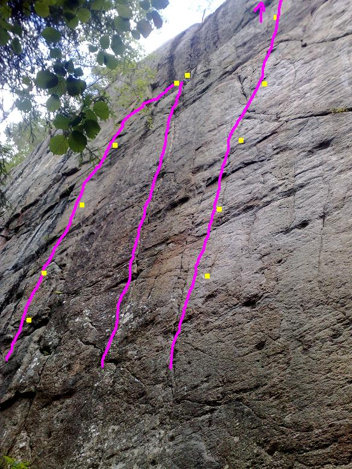
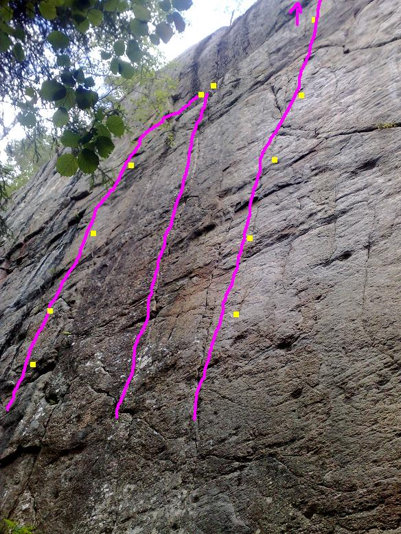

Byn
Lat: 59.76071786878119
Long: 12.622604370117188
Allmänt
Mycket fin klippa 15 km norr om Arvika. Det något allmänna namnet uttalas på värmländska med betoning på b, kort y och långt n så att man inte låter som en stockholmare som gått vilse.
Vägbeskrivning
Byn
Från Karlstad: Ta höger mot Gunnarskog strax innan du kommer in i Arvika.
Härifrån tills du parkerar bilen är det ca. tolv kilometer.
Strax efter sjön Racken skymtar några klippor i skogskanten. Den ena är Öjerudsklippan och har bra leder i sexa-sjua registret, den andra är skit. Kör vidare. Snart skymtar en sjö på vänster hand. Den heter Gunnern och nu är det dags att börja spana. Efter en svag vänster och en svag höger går en liten grusväg upp till höger. Den markeras av en skylt med en tax, klippans topp syns om man vet var den är.
Kör försiktigt grusvägen uppåt och parkera likaledes försiktigt efter en vänstersväng vid en liten åker.
Följ en liten traktorväg längs åkerkanten in i skogen. Efter ett tag leder en otydlig stig in till höger mot klippan. Max fem minuter.
Beskrivning


 



Lederna, som bjuder på fin, ofta någorlunda hård klättring från början till slut ligger tätt samlade på en 50 meter bred, lätt överhängande granitvägg.
Väggen bedömdes vid de första besöken i början av nittiotalet samfällt som oklätterbart. Några år senare stod det klart att vi här hade den bästa sportklätterklippan (tradlederna är bara lite mer sportiga) i vår landsände. Svagt överhängande klättring på rundade lister och sprickor. Klippkvalitén är god till riktigt god och friktionen är som regel bra. Solen ligger på klippan under eftermiddagen, kvällen.
Alla projekt får väl betraktas som öppna vid det här laget, men bulta inte utan att först ta kontakt med någon ur Jösse Klättersällskap. Se kontaktuppgifter på
.
access
Lederna
Topon är skapad på enklast möjliga sätt med dålig grundbild och därefter inritade linjer. Kanske underlättar något vid letande av lnjer vid klippan. Klicka på bilderna för större exemplar. Rosa heldragna linjer indikerar gjorda leder, streckade linjer indikerar projekt. Gula fyrkanter indikerar bultar eller ankare. Alla linjer och bultplaceringar är uppskattningar. Utgå från beskrivande text, bilder och sunt förnuft när ni letar linjer.
Det går rätt bra att orientera sig med hjälp av antalet borrbultar. Alla leder följer någorlunda tydliga linjer.
Räknas upp från vänster till höger.
- 1
- Tusen platåer
- 6-
- Startar i ett litet dieder. Nåt krafs Anders Borg/Tväråna gjorde under en rensningsdag. Nyrensad 2009.
- 2
- ??
- 6
- 3m till vänster om Gbs ab , nyrensad 2009.
-
- projekt
- 7+ ?
- Samma start som Gbs ab men drar direkt till vänster, dåliga säkringsmöjligheter och klassisk Bynstil på klättringen gör att gruvsamhetsgraden på detta proj. är tämligen hög , nyrensad 2009.
- 3
- Gbs-ab
- 6
- Lagomt säkrad. Perfekt uppvärmning. Enligt flera en av Arvikas finaste för sin grad. Vad förkortningen står för har aldrig avslöjats, men man kan utgå från att den döljer nåt slags förolämpning mot en viss AB.
- 4
- Fruitcake
- 7-
- Välsäkrad, bra uppvärmning. Börjar någon meter till höger om Gbs-ab
- 5
- Rehab
- 6c+
- Numera helbultad -09 Kruxig starthalva med lättare avslutning.
- 6
- Don Diego de la Vega
- 7b+
- Fantastiskt fin. Svårare ju högre man kommer. Kompletterad med ytterligare borrbult vid kruxet 2008. Borde borga för mindre/kortare luftfärder och fler bestigningar. Toppankare.
- 7a
- Iliaden
- 7b
- Samma start som odyssen upp till nohands-vilan i hålet, sedan vänster och rakt upp, 4 självständiga bultar plus toppankare. Fin. .
- 7b
- Odysséen
- 7c
- Toppklättring. 6+ enligt Christian. Toppankare . Numera tilläggsbultad med en bult till och en ny bult som möjliggör en mer direkt väg över skölden (-2013) (Obs- Går mer rakt upp än bilden visar.) .
- 8
- Haiku warrior
- 7+
- Följer det tydliga spricksystemet, tills detta tar slut och kruxet börjar. Slutar på hyllan och delar ankare med Kraft.Säkringsbeta: Det är en bit upp till första placering och i kruxet kan det kännas tryggt med en mindre offsetkil.
- 9
- Kraft
- 7a+
- Följ bultarna till hyllan. Använd ankaret till höger om du vill komma åt Konstant dyspné. Regnsäker, bra uppvärmningsled.
- 10
- Kraftigare
- 7b
- Förlängningen på Kraft rakt upp från ankaret. Tung layback. men bra vila efter första kraftdelen håller graden nere.Jäkligt fin klättring !.
- 11
- Kraft Extention
- 7a+
- Alternativ förlängning. Följ bultarna till hyllan, klipp lång slinga i Konstant dyspnés ankare och traversera vidare till och upp Debaeredrets avslutning , spanienkänsla !.
- 12
- Konstant dyspné
- 8-/8
- Sprickan upp till ankare på hyllan. Fortsättning till toppen möjlig. Klicka på länk för beta i form av video.
- 13
- Debaeredret
- 7c+ (8+)
- Pumpande, toppankare. Snäppet hårdare än Odyssen !
- 14
- Dikt
- 8a
- 8 bb plus ankare, pumpig och fin .Observera -Risk att nypa fast repet och/eller bryta av slutgreppet/flaket, Förläng toppankaret och/eller fira av själv . Nytt toppankare 2012 .
- 15
- Epik
- 8
- På klippans brantaste del. utspridda kilplaceringar. Orepeterad 2009
- 16
- Projekt 3
- >9
- Många långa drag på ett finger i taget. Om den ska bultas så gör det så det inte stör Epik!
- 17
- Brand
- 7b
- Runda sidogrepp på röd klippa. Perfekt uppvärmning om man kan flytten. Toppankare.
- 18
- Motorburen ungdom
- 7a+
- Genom taket till höger om Brand. Balansigt crux över facet. Toppankare i stor tall.
- 19
- Verklighetsspel
- 7a (7)
- Leta efter bult på pelaren direkt till höger om taket. Du ska rakt upp på pelaren. Möjlighet finns att vika av höger på Romans snälla vilo-hylla. Förmodligen inte så det är tänkt. Bra med någon liten friend till slutväggen.
- 20
- Roman
- 6c+
- Först slabb, sen överhäng . Nytt toppankare och en extra bult i starten (-13) borgar för många fler att få klättra denna pärla.
- 21
- Sonett
- 6a
- Tryggt bultad uppvärmningsled, roliga rörelser. 4bb plus toppankare.
- 22
- Novell
- 6-
- Slutar tio meter upp i tallen.
Kategori:Saknar kolumner
Kategori:Saknar skiss
Kategori:Värmland
Kategori:trad
Kategori:sport
Kategori:mix
Kategori:vertikalt
Kategori:Överhäng
Copyright (C) Permission is granted to copy, distribute and/or modify this document under the terms of the GNU Free Documentation License, Version 1.3